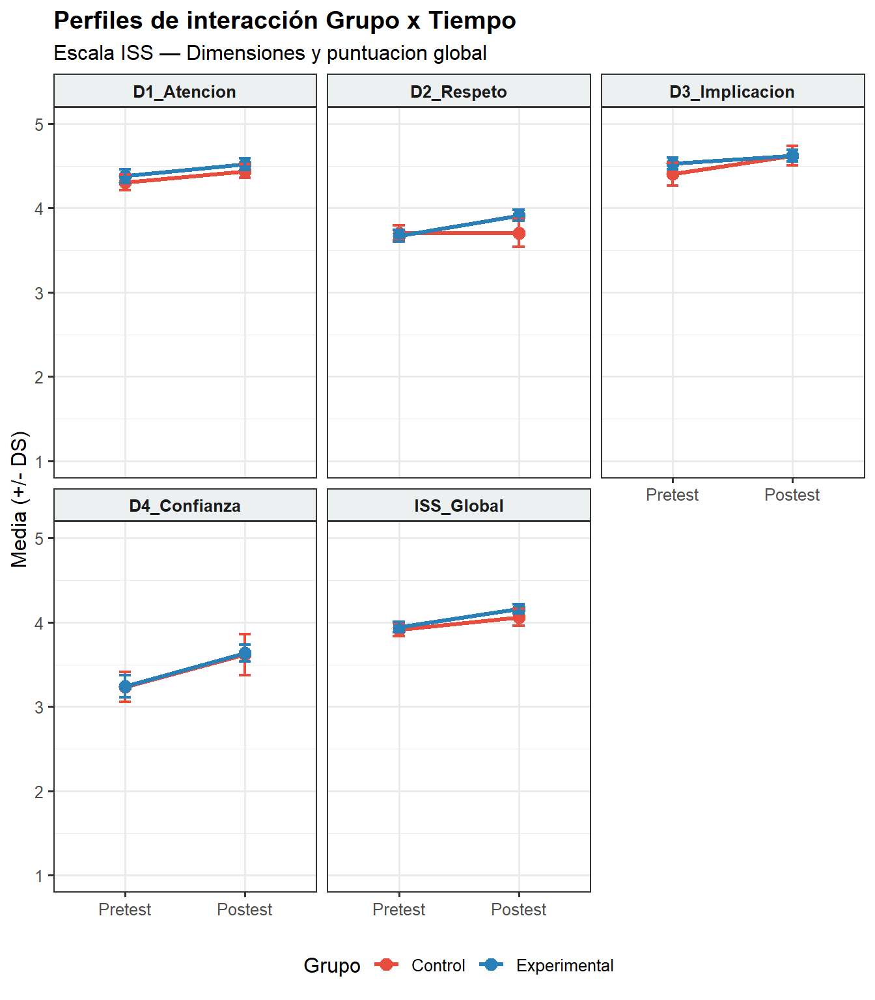

Capítulo 6 Análisis cuantitativo de sensibilidad intercultural
Este capítulo examina si la experiencia telecolaborativa modificó la sensibilidad intercultural de los estudiantes, comparando el grupo Experimental con el grupo Control en el Pretest y el Postest. El análisis se organiza en siete partes: (1) la descripción de las puntuaciones por grupo y momento; (2) la verificación de que ambos grupos partían de niveles equivalentes y de que la pérdida de participantes no sesgó la comparación; (3) la prueba del efecto de la intervención mediante la interacción Grupo × Tiempo, con la verificación de los supuestos de cada modelo; (4) el cambio dentro de cada grupo; (5) la transición de los estudiantes entre los perfiles de sensibilidad identificados en el Capítulo 5; (6) la potencia estadística del estudio; y (7) las conclusiones.
6.1 Análisis exploratorio Pretest-Postest
| Dimension | Grupo | Tiempo | n | M | DE | Mediana | Min | Max | Cambio | Cambio % |
|---|---|---|---|---|---|---|---|---|---|---|
| D1_Atencion | Control | Pretest | 15 | 4.305 | 0.362 | 4.286 | 3.714 | 4.857 | 0.133 | 3.1 |
| Postest | 15 | 4.438 | 0.308 | 4.571 | 3.857 | 4.857 | 0.133 | 3.1 | ||
| Experimental | Pretest | 28 | 4.378 | 0.417 | 4.429 | 3.143 | 5.000 | 0.142 | 3.2 | |
| Postest | 28 | 4.520 | 0.355 | 4.571 | 3.571 | 5.000 | 0.142 | 3.2 | ||
| D2_Respeto | Control | Pretest | 15 | 3.705 | 0.339 | 3.714 | 3.000 | 4.143 | 0.000 | 0.0 |
| Postest | 15 | 3.705 | 0.656 | 3.857 | 2.000 | 4.429 | 0.000 | 0.0 | ||
| Experimental | Pretest | 28 | 3.668 | 0.367 | 3.714 | 2.857 | 4.571 | 0.245 | 6.7 | |
| Postest | 28 | 3.913 | 0.365 | 3.857 | 3.143 | 4.571 | 0.245 | 6.7 | ||
| D3_Implicacion | Control | Pretest | 15 | 4.400 | 0.523 | 4.333 | 3.333 | 5.000 | 0.222 | 5.0 |
| Postest | 15 | 4.622 | 0.452 | 4.667 | 3.667 | 5.000 | 0.222 | 5.0 | ||
| Experimental | Pretest | 28 | 4.524 | 0.368 | 4.667 | 3.667 | 5.000 | 0.095 | 2.1 | |
| Postest | 28 | 4.619 | 0.371 | 4.667 | 3.667 | 5.000 | 0.095 | 2.1 | ||
| D4_Confianza | Control | Pretest | 15 | 3.233 | 0.691 | 3.000 | 1.750 | 4.500 | 0.384 | 11.9 |
| Postest | 15 | 3.617 | 0.940 | 3.750 | 1.750 | 5.000 | 0.384 | 11.9 | ||
| Experimental | Pretest | 28 | 3.241 | 0.709 | 3.250 | 1.750 | 4.500 | 0.393 | 12.1 | |
| Postest | 28 | 3.634 | 0.534 | 3.750 | 2.250 | 4.500 | 0.393 | 12.1 | ||
| ISS_Global | Control | Pretest | 15 | 3.914 | 0.296 | 3.905 | 3.381 | 4.333 | 0.149 | 3.8 |
| Postest | 15 | 4.063 | 0.388 | 4.143 | 3.333 | 4.667 | 0.149 | 3.8 | ||
| Experimental | Pretest | 28 | 3.946 | 0.324 | 4.000 | 3.143 | 4.476 | 0.217 | 5.5 | |
| Postest | 28 | 4.163 | 0.289 | 4.262 | 3.667 | 4.667 | 0.217 | 5.5 | ||
| Nota. M = Media; DE = Desviacion estandar; Cambio = Postest − Pretest; Cambio % = porcentaje de cambio relativo al pretest. |
La Tabla 6.1 presenta los estadísticos descriptivos de las cuatro dimensiones de la Sensibilidad Intercultural (Atención, Respeto, Implicación y Confianza) y de la puntuación global del ISS, diferenciados por grupo (Control y Experimental) y momento de medición (Pretest y Postest). En términos generales, ambos grupos mostraron incrementos en las puntuaciones medias tras la intervención, aunque la magnitud y consistencia de dichos cambios varió según la dimensión, sin un patrón uniforme a favor del grupo experimental en todos los casos.
En Atención (D1), ambos grupos partieron de niveles ya elevados y mostraron incrementos modestos y prácticamente equivalentes: el grupo Control pasó de 4.305 (DE=0.362) a 4.438 (DE=0.308) (+3.1%), y el grupo Experimental de 4.378 (DE=0.417) a 4.520 (DE=0.355) (+3.2%). No se observa, en esta dimensión, una diferencia apreciable entre grupos.
En Respeto (D2), el grupo Control no mostró cambio en su media (M=3.705 en ambos momentos, 0.0%), aunque sí un notable aumento en su dispersión (DE de 0.339 a 0.656), lo que sugiere una mayor heterogeneidad de respuestas dentro del grupo tras la intervención, posiblemente debida a casos individuales atípicos. El grupo Experimental, en cambio, aumentó de 3.668 (DE=0.367) a 3.913 (DE=0.365) (+6.7%). Es la dimensión con la diferencia más clara a favor del grupo experimental.
En Implicación (D3), el patrón fue inverso al esperado: el grupo Control mostró el mayor incremento relativo, pasando de 4.400 (DE=0.523) a 4.622 (DE=0.452) (+5.0%), mientras que el grupo Experimental avanzó en menor magnitud, de 4.524 (DE=0.368) a 4.619 (DE=0.371) (+2.1%). Este resultado no respalda un efecto diferencial de la intervención en esta dimensión y matiza la idea de una mejora general propia del grupo experimental.
En Confianza (D4), ambos grupos experimentaron el mayor incremento relativo de las cuatro dimensiones, con magnitudes muy similares entre sí: el grupo Control pasó de 3.233 (DE=0.691) a 3.617 (DE=0.940) (+11.9%), y el grupo Experimental de 3.241 (DE=0.709) a 3.634 (DE=0.534) (+12.1%). La ausencia de diferencia apreciable entre grupos en esta dimensión, pese a ser la de mayor cambio absoluto, sugiere un efecto de maduración o familiarización común a ambos grupos más que un efecto específico de la intervención.
Finalmente, en la puntuación global (ISS_Global), ambos grupos mejoraron tras el postest, con una magnitud relativa mayor en el grupo Experimental: el grupo Control pasó de 3.914 (DE=0.296) a 4.063 (DE=0.388) (+3.8%), mientras que el grupo Experimental aumentó de 3.946 (DE=0.324) a 4.163 (DE=0.289) (+5.5%).
En conjunto, estos resultados descriptivos no permiten afirmar un efecto uniforme y consistente de la intervención sobre las cuatro dimensiones: mientras que Respeto y la puntuación global muestran una ventaja descriptiva a favor del grupo Experimental, Implicación exhibe el patrón contrario, y Atención y Confianza no muestran diferencias apreciables entre grupos. Además, las magnitudes observadas se solapan considerablemente al considerar las desviaciones estándar de cada grupo, por lo que estas diferencias deben contrastarse con una prueba formal de interacción Grupo × Tiempo (sección 6.3) antes de atribuir cualquier cambio a la intervención.

Figura 6.1: Perfiles de interacción Grupo × Tiempo para cada dimensión del ISS. Las barras de error representan ±1 EE.
El gráfico de perfiles Grupo × Tiempo muestra el patrón de cambio en cada dimensión. Únicamente en Respeto se observa una divergencia clara entre grupos: mientras el grupo Control mantuvo una media estable entre momentos (M=3.705 en ambos), el grupo Experimental mostró un incremento sostenido (de 3.668 a 3.913), lo que sugiere un posible efecto específico de la intervención en esta dimensión. En las restantes dimensiones (Atención, Implicación, Confianza) y en la puntuación global, las trayectorias de ambos grupos resultaron prácticamente paralelas, lo que es más compatible con un efecto general del tiempo (familiarización con el instrumento o maduración) que con un efecto diferencial atribuible a la intervención.
6.2 Equivalencia inicial de los grupos y pérdida de participantes
Antes de comparar los cambios entre grupos, se verificó que ambos partieran de niveles similares de sensibilidad intercultural. Para ello se compararon las puntuaciones del Pretest de los 43 estudiantes con Postest mediante la prueba U de Mann-Whitney.
| Dimensión | M | DE | Mdn | M | DE | Mdn | U | p | r |
|---|---|---|---|---|---|---|---|---|---|
| D1_Atencion | 4.305 | 0.362 | 4.286 | 4.378 | 0.417 | 4.429 | 181.5 | 0.472 | 0.110 |
| D2_Respeto | 3.705 | 0.339 | 3.714 | 3.668 | 0.367 | 3.714 | 234.5 | 0.536 | 0.094 |
| D3_Implicacion | 4.400 | 0.523 | 4.333 | 4.524 | 0.368 | 4.667 | 186.0 | 0.538 | 0.094 |
| D4_Confianza | 3.233 | 0.691 | 3.000 | 3.241 | 0.709 | 3.250 | 202.5 | 0.857 | 0.027 |
| ISS_Global | 3.914 | 0.296 | 3.905 | 3.946 | 0.324 | 4.000 | 190.5 | 0.628 | 0.074 |
No se encontraron diferencias significativas entre los grupos en ninguna dimensión ni en la puntuación global (todas las \(p>.47\); \(r\leq.11\)). Las medianas fueron muy próximas (idénticas en Respeto, \(Mdn=3.714\)) y las desviaciones estándar similares entre grupos; la mayor distancia entre medianas se dio en Implicación (4.333 frente a 4.667), una dimensión con efecto techo en la que pocas respuestas desplazan la mediana, sin que la diferencia resultara significativa (\(p=.538\)). Por tanto, ambos grupos eran equivalentes al inicio de la intervención y la comparación de sus cambios es legítima.
Dado que los cinco estudiantes que no respondieron el Postest pertenecían al grupo Control, se examinó si esta pérdida pudo sesgar la comparación, contrastando su Pretest con el de los 15 estudiantes del grupo Control que sí completaron ambas aplicaciones.
| Dimensión | M | DE | Mdn | M | DE | Mdn | U | p | r |
|---|---|---|---|---|---|---|---|---|---|
| D1_Atencion | 4.600 | 0.396 | 4.714 | 4.305 | 0.362 | 4.286 | 54.0 | 0.160 | 0.315 |
| D2_Respeto | 3.771 | 0.344 | 3.857 | 3.705 | 0.339 | 3.714 | 42.0 | 0.725 | 0.079 |
| D3_Implicacion | 4.467 | 0.506 | 4.667 | 4.400 | 0.523 | 4.333 | 40.0 | 0.858 | 0.040 |
| D4_Confianza | 2.850 | 0.720 | 3.000 | 3.233 | 0.691 | 3.000 | 28.0 | 0.428 | 0.177 |
| ISS_Global | 3.971 | 0.321 | 4.048 | 3.914 | 0.296 | 3.905 | 41.5 | 0.759 | 0.068 |
Los estudiantes que abandonaron el estudio no difirieron de quienes lo completaron (todas las \(p>.16\)), y sus medianas fueron similares en todas las dimensiones (idénticas en Confianza, \(Mdn=3.000\)). Los tamaños del efecto fueron pequeños o nulos (\(r\leq.18\)), salvo en Atención (\(r=.32\), moderado), donde quienes abandonaron puntuaban algo más alto; con solo cinco casos, esta diferencia no alcanza significancia y no se acompaña de un patrón consistente en las demás dimensiones, por lo que no hay indicios de que la pérdida de participantes haya sesgado la composición del grupo Control.
6.3 Efecto de la intervención: interacción Grupo × Tiempo
Para evaluar si el grupo Experimental cambió más que el grupo Control, se aplicaron tres aproximaciones complementarias: (a) un análisis de covarianza (ANCOVA) sobre el Postest controlando por el Pretest, recomendado para diseños pretest-postest por su mayor potencia estadística; (b) un modelo lineal mixto con efectos fijos de Tiempo, Grupo y su interacción y un intercepto aleatorio por estudiante, que permite incluir a los 48 participantes, incluidos los cinco sin Postest; y (c) como alternativa robusta ante la falta de normalidad de algunas dimensiones, la comparación de las ganancias (Postest − Pretest) entre grupos mediante la prueba U de Mann-Whitney.
| Dimension | ANCOVA: dif. ajustada | ANCOVA: F | ANCOVA: p | η²p | Mixto: interacción | Mixto: p | Ganancias: p |
|---|---|---|---|---|---|---|---|
| D1_Atencion | 0.048 | 0.27 | 0.604 | 0.007 | 0.042 | 0.705 | 0.898 |
| D2_Respeto | 0.219 | 2.02 | 0.163 | 0.048 | 0.258 | 0.125 | 0.385 |
| D3_Implicacion | -0.038 | 0.09 | 0.766 | 0.002 | -0.115 | 0.456 | 0.659 |
| D4_Confianza | 0.013 | 0.00 | 0.945 | 0.000 | -0.034 | 0.873 | 0.949 |
| ISS_Global | 0.080 | 0.91 | 0.346 | 0.022 | 0.074 | 0.411 | 0.532 |
Ninguna de las tres aproximaciones detectó un efecto diferencial significativo de la intervención: el grupo Experimental no cambió significativamente más que el grupo Control en ninguna dimensión ni en la puntuación global. Respeto fue la única dimensión en la que las tres pruebas coincidieron en señalar una ventaja del grupo Experimental (diferencia ajustada = 0.219, \(\eta^2_p=.048\); interacción en el modelo mixto = 0.258), de magnitud pequeña a moderada, aunque sin alcanzar significancia estadística (ANCOVA \(p=.163\); modelo mixto \(p=.125\); ganancias \(p=.385\)). Por tanto, la divergencia observada en Respeto en el gráfico de perfiles debe interpretarse como una tendencia y no como un efecto demostrado.
6.3.1 Supuestos del ANCOVA y estimaciones robustas
Se verificaron los supuestos del ANCOVA: (a) la homogeneidad de las pendientes de regresión, mediante el término de interacción Pretest × Grupo; (b) la normalidad de los residuos, con la prueba de Shapiro-Wilk; y (c) la homogeneidad de varianzas entre grupos, con la prueba de Levene (basada en la mediana). Además, dado que algunas dimensiones no cumplen el supuesto de normalidad, el efecto de Grupo se estimó también con errores estándar robustos HC3 (Long y Ervin 2000) y mediante una prueba de permutación con 9 999 permutaciones de las etiquetas de grupo, que conserva el par Pretest-Postest de cada estudiante y no requiere normalidad.
| Dimension | Pendientes: p | Shapiro-Wilk: p | Levene: p | Dif. ajustada | p clásico | p robusto (HC3) | p permutación |
|---|---|---|---|---|---|---|---|
| D1_Atencion | 0.492 | 0.864 | 0.925 | 0.048 | 0.604 | 0.625 | 0.598 |
| D2_Respeto | 0.664 | 0.004 | 0.246 | 0.219 | 0.163 | 0.250 | 0.165 |
| D3_Implicacion | 0.153 | 0.004 | 0.929 | -0.038 | 0.766 | 0.772 | 0.758 |
| D4_Confianza | 0.176 | 0.734 | 0.146 | 0.013 | 0.945 | 0.955 | 0.950 |
| ISS_Global | 0.121 | 0.118 | 0.288 | 0.080 | 0.346 | 0.391 | 0.348 |
No se encontraron diferencias significativas entre las pendientes de regresión de ambos grupos en ninguna dimensión (todas las \(p>.12\)), y las varianzas residuales fueron homogéneas (todas las \(p>.14\)), por lo que el ANCOVA resulta apropiado para estos datos. El supuesto de normalidad de los residuos no se cumplió en Respeto ni en Implicación (\(p=.004\) en ambas), coherente con el efecto techo y el caso atípico identificados en el Capítulo 5. No obstante, las estimaciones robustas condujeron a las mismas conclusiones que el ANCOVA clásico: en Respeto, la prueba de permutación (\(p=.165\)) reprodujo prácticamente el valor clásico (\(p=.163\)) y la estimación con errores robustos fue aún más conservadora (\(p=.250\)). En consecuencia, la ausencia de un efecto diferencial significativo de la intervención no obedece a la violación de supuestos.
6.3.2 Modelo lineal mixto: coeficientes y supuestos
El modelo mixto se especificó como \(Y_{it} = \beta_0 + \beta_1\,\text{Tiempo}_t + \beta_2\,\text{Grupo}_i + \beta_3\,(\text{Tiempo}\times\text{Grupo})_{it} + u_i + \varepsilon_{it}\), donde \(u_i\) es el intercepto aleatorio de cada estudiante. Con el grupo Control y el Pretest como categorías de referencia, \(\beta_0\) es la media del Control en el Pretest, \(\beta_1\) el cambio del Control entre aplicaciones, \(\beta_2\) la diferencia entre grupos en el Pretest y \(\beta_3\) la diferencia adicional en el cambio del grupo Experimental respecto al Control, que es el parámetro que evalúa el efecto de la intervención.
| Dimensión | Término | b | EE | gl | t | p |
|---|---|---|---|---|---|---|
| D1_Atencion | Intercepto (Control, Pretest) | 4.379 | 0.084 | 46 | 52.10 | <.001 |
| Tiempo (cambio del Control) | 0.100 | 0.089 | 41 | 1.13 | 0.266 | |
| Grupo (diferencia en el Pretest) | -0.001 | 0.110 | 46 | -0.01 | 0.993 | |
| Tiempo × Grupo (interacción) | 0.042 | 0.112 | 41 | 0.38 | 0.705 | |
| D2_Respeto | Intercepto (Control, Pretest) | 3.721 | 0.094 | 46 | 39.63 | <.001 |
| Tiempo (cambio del Control) | -0.013 | 0.131 | 41 | -0.10 | 0.918 | |
| Grupo (diferencia en el Pretest) | -0.053 | 0.123 | 46 | -0.43 | 0.668 | |
| Tiempo × Grupo (interacción) | 0.258 | 0.165 | 41 | 1.56 | 0.125 | |
| D3_Implicacion | Intercepto (Control, Pretest) | 4.417 | 0.093 | 46 | 47.41 | <.001 |
| Tiempo (cambio del Control) | 0.211 | 0.122 | 41 | 1.73 | 0.091 | |
| Grupo (diferencia en el Pretest) | 0.107 | 0.122 | 46 | 0.88 | 0.384 | |
| Tiempo × Grupo (interacción) | -0.115 | 0.153 | 41 | -0.75 | 0.456 | |
| D4_Confianza | Intercepto (Control, Pretest) | 3.138 | 0.157 | 46 | 19.97 | <.001 |
| Tiempo (cambio del Control) | 0.427 | 0.168 | 41 | 2.55 | 0.015 | |
| Grupo (diferencia en el Pretest) | 0.104 | 0.206 | 46 | 0.50 | 0.617 | |
| Tiempo × Grupo (interacción) | -0.034 | 0.210 | 41 | -0.16 | 0.873 | |
| ISS_Global | Intercepto (Control, Pretest) | 3.929 | 0.071 | 46 | 55.18 | <.001 |
| Tiempo (cambio del Control) | 0.144 | 0.071 | 41 | 2.01 | 0.051 | |
| Grupo (diferencia en el Pretest) | 0.017 | 0.093 | 46 | 0.18 | 0.856 | |
| Tiempo × Grupo (interacción) | 0.074 | 0.089 | 41 | 0.83 | 0.411 |
Los coeficientes confirman que los grupos partieron de niveles equivalentes (ninguna diferencia de Grupo en el Pretest fue significativa) y que ninguna interacción Tiempo × Grupo alcanzó significancia. El grupo Control aumentó significativamente en Confianza (\(b=0.427\), \(p=.015\)) y mostró un aumento marginal en la puntuación global (\(b=0.144\), \(p=.051\)). Como las interacciones correspondientes fueron prácticamente nulas (Confianza: \(b=-0.034\), \(p=.873\)), el grupo Experimental experimentó un aumento de magnitud similar: ambos grupos incrementaron su seguridad en la interacción intercultural, sin que este cambio pueda atribuirse a la intervención.
Se verificaron los supuestos del modelo mixto: (a) la normalidad de los residuos y de los interceptos aleatorios, con la prueba de Shapiro-Wilk; (b) la homogeneidad de las varianzas residuales entre las cuatro combinaciones de Grupo y Tiempo, con la prueba de Levene y con una prueba de razón de verosimilitudes (LRT) que compara el modelo de varianza común con uno que estima una varianza distinta para cada combinación; y (c) el supuesto de que los datos faltan al azar (MAR), mediante una regresión logística del abandono sobre el Pretest en el grupo Control y comparando la interacción estimada con los 48 estudiantes y con los 43 que respondieron ambas aplicaciones.
| Dimension | SW residuos: p | SW interceptos: p | Levene: p | LRT varianzas: p | Interacción (var. por celda) | Abandono: p | Interacción (n=43) |
|---|---|---|---|---|---|---|---|
| D1_Atencion | 0.377 | 0.104 | 0.660 | 0.599 | 0.050 (p=0.656) | 0.151 | 0.010 (p=0.933) |
| D2_Respeto | 0.002 | 0.200 | 0.334 | 0.008 | 0.257 (p=0.193) | 0.692 | 0.245 (p=0.164) |
| D3_Implicacion | 0.003 | 0.022 | 0.867 | 0.766 | -0.113 (p=0.498) | 0.794 | -0.127 (p=0.424) |
| D4_Confianza | 0.965 | 0.197 | 0.407 | 0.079 | -0.029 (p=0.903) | 0.291 | 0.010 (p=0.965) |
| ISS_Global | 0.716 | 0.181 | 0.564 | 0.444 | 0.071 (p=0.433) | 0.701 | 0.068 (p=0.456) |
La normalidad de los residuos no se cumplió en Respeto (\(p=.002\)) ni en Implicación (\(p=.003\)), y en esta última tampoco la de los interceptos aleatorios (\(p=.022\)). En Respeto, la falla se debe principalmente a un único valor extremo: el Postest del estudiante identificado como caso atípico en el Capítulo 5, con un residuo normalizado de −3.91, el único superior a 2.5 en valor absoluto entre todas las dimensiones. En Implicación, la falla es coherente con el efecto techo de la dimensión. La prueba de Levene no detectó diferencias de varianza (todas las \(p>.33\)), pero la LRT sí lo hizo en Respeto (\(p=.008\)): la desviación estándar residual del grupo Control en el Postest fue cerca del doble que la de las demás combinaciones. Al permitir una varianza distinta para cada combinación, la interacción en Respeto se mantuvo prácticamente igual (0.257), con un valor \(p\) más alto (\(p=.193\)).
Respecto a los datos faltantes, ninguna dimensión del Pretest predijo el abandono en el grupo Control (todas las \(p>.15\)), y la interacción estimada con los 43 estudiantes con datos completos fue muy similar a la obtenida con los 48 (en Respeto, 0.245 frente a 0.258), por lo que el supuesto MAR resulta razonable y la inclusión de los cinco estudiantes sin Postest no altera los resultados.
Dado que no todos los supuestos se cumplieron, la interacción se evaluó también mediante dos procedimientos que no requieren normalidad ni homogeneidad de varianzas: un intervalo de confianza bootstrap del 95% (2 000 remuestreos de estudiantes, estratificados por grupo, de modo que cada estudiante conserva sus dos mediciones) y una prueba de permutación (2 000 permutaciones de las etiquetas de grupo entre estudiantes).
| Dimensión | Interacción | IC 95% bootstrap | p clásico | p permutación |
|---|---|---|---|---|
| D1_Atencion | 0.042 | [-0.167, 0.270] | 0.705 | 0.707 |
| D2_Respeto | 0.258 | [-0.073, 0.623] | 0.125 | 0.135 |
| D3_Implicacion | -0.115 | [-0.400, 0.165] | 0.456 | 0.461 |
| D4_Confianza | -0.034 | [-0.489, 0.397] | 0.873 | 0.877 |
| ISS_Global | 0.074 | [-0.106, 0.257] | 0.411 | 0.410 |
Todos los intervalos bootstrap incluyeron el cero y ninguna prueba de permutación fue significativa. En Respeto, la interacción mantuvo su dirección favorable al grupo Experimental (IC 95%: −0.073 a 0.623; permutación \(p=.135\)). En consecuencia, las violaciones de supuestos detectadas no modifican la conclusión del modelo mixto: no hay evidencia de un efecto diferencial significativo de la intervención, y la ventaja del grupo Experimental en Respeto debe interpretarse como una tendencia, con valores \(p\) entre .125 y .193 según el procedimiento empleado.
6.4 Cambio dentro de cada grupo
Para describir la magnitud del cambio en cada grupo, se compararon el Pretest y el Postest mediante la prueba de Wilcoxon para muestras pareadas en Atención, Respeto, Implicación y la puntuación global, y mediante la prueba t de Student pareada en Confianza, la única dimensión que cumplió el supuesto de normalidad en ambas mediciones. Los valores p se ajustaron por comparaciones múltiples dentro de cada grupo con el método de Holm.
| Grupo | Dimension | Pretest | Postest | Cambio | p | Efecto | p_Holm |
|---|---|---|---|---|---|---|---|
| Control | D1_Atencion | 4.305 | 4.438 | 0.133 | 0.213 | r = 0.38 | 0.425 |
| D2_Respeto | 3.705 | 3.705 | -0.000 | 0.529 | r = 0.18 | 0.529 | |
| D3_Implicacion | 4.400 | 4.622 | 0.222 | 0.079 | r = 0.56 | 0.324 | |
| D4_Confianza | 3.233 | 3.617 | 0.383 | 0.075 | dz = 0.50 | 0.324 | |
| ISS_Global | 3.914 | 4.063 | 0.149 | 0.065 | r = 0.48 | 0.324 | |
| Experimental | D1_Atencion | 4.378 | 4.520 | 0.143 | 0.055 | r = 0.39 | 0.109 |
| D2_Respeto | 3.668 | 3.913 | 0.245 | 0.013 | r = 0.48 | 0.039 | |
| D3_Implicacion | 4.524 | 4.619 | 0.095 | 0.253 | r = 0.25 | 0.253 | |
| D4_Confianza | 3.241 | 3.634 | 0.393 | 0.002 | dz = 0.65 | 0.008 | |
| ISS_Global | 3.946 | 4.163 | 0.218 | <.001 | r = 0.69 | 0.002 |
El grupo Experimental mostró mejoras significativas tras el ajuste de Holm en Respeto (\(+0.245\); \(p=.039\); \(r=.48\)), Confianza (\(+0.393\); \(p=.008\); \(d_z=.65\)) y la puntuación global (\(+0.218\); \(p=.002\); \(r=.69\)), mientras que el grupo Control no presentó cambios significativos tras el ajuste, aunque mostró tendencias de mejora en Implicación, Confianza y la puntuación global. Sin embargo, estos resultados deben leerse junto con los de la sección anterior: que un grupo alcance significancia y el otro no, no implica que ambos difieran entre sí. En Confianza, por ejemplo, el cambio fue prácticamente idéntico en los dos grupos (\(+0.383\) y \(+0.393\)), y la menor significancia del Control obedece principalmente a su menor tamaño. La excepción es Respeto, donde el grupo Control no registró cambio alguno (\(0.000\)) frente a la mejora del grupo Experimental, lo que es coherente con la tendencia descrita anteriormente.
6.5 Transición entre perfiles de sensibilidad intercultural
Dado que las filas de ambas aplicaciones corresponden al mismo estudiante, fue posible examinar si cada participante cambió de perfil entre el Pretest y el Postest, y si estas transiciones difirieron entre grupos. Los perfiles corresponden a la solución de dos clusters obtenida en cada fase (Capítulo 5), identificados por su denominación sustantiva.
| Grupo | n | Baja → Baja | Baja → Alta | Alta → Baja | Alta → Alta | McNemar exacto (p) |
|---|---|---|---|---|---|---|
| Control | 15 | 4 | 2 | 1 | 8 | 1.000 |
| Experimental | 28 | 5 | 4 | 3 | 16 | 1.000 |
La mayoría de los estudiantes se mantuvo en su perfil inicial en ambos grupos (12 de 15 en el Control y 21 de 28 en el Experimental). Los cambios ocurrieron en ambas direcciones: en el grupo Control, dos estudiantes pasaron de Baja a Alta Sensibilidad y uno retrocedió, y en el grupo Experimental cuatro mejoraron de perfil y tres retrocedieron, con un balance neto de un estudiante en cada grupo. Ninguno de estos cambios fue significativo (McNemar exacto, \(p=1.00\) en ambos grupos), y la proporción de estudiantes que partieron de Baja Sensibilidad y alcanzaron el perfil de Alta Sensibilidad tampoco difirió entre grupos (2 de 6 en el Control frente a 4 de 9 en el Experimental). En consecuencia, el aumento agregado de la proporción de estudiantes con Alta Sensibilidad descrito en el Capítulo 5 no puede atribuirse a la intervención, sino a movimientos individuales en ambos sentidos presentes en los dos grupos.
6.6 Potencia estadística
Para valorar la ausencia de efectos significativos debe considerarse la potencia estadística del estudio (Cohen 1988). Se calculó, para la comparación entre grupos de tamaño desigual (15 y 28 estudiantes; \(\alpha=.05\) bilateral), la diferencia mínima detectable con una potencia del 80% y, para cada dimensión, el tamaño del efecto observado (\(d\) de Cohen: diferencia ajustada del ANCOVA dividida por la desviación estándar combinada del Postest), la potencia con la que el estudio podía detectarlo y el número de estudiantes por grupo que se requeriría para alcanzar una potencia del 80%.
| Dimension | Dif. ajustada | DE combinada | d | Potencia alcanzada | n por grupo para 80% |
|---|---|---|---|---|---|
| D1_Atencion | 0.048 | 0.339 | 0.14 | 0.07 | 781 |
| D2_Respeto | 0.219 | 0.485 | 0.45 | 0.28 | 79 |
| D3_Implicacion | -0.038 | 0.400 | 0.09 | 0.06 | 1784 |
| D4_Confianza | 0.013 | 0.699 | 0.02 | 0.05 | 45014 |
| ISS_Global | 0.080 | 0.326 | 0.25 | 0.12 | 261 |
Con los tamaños de grupo disponibles, el estudio solo tenía una potencia del 80% para detectar diferencias grandes entre grupos (\(d\geq0.92\)). En Respeto, la diferencia observada corresponde a un efecto pequeño a moderado (\(d=0.45\)), que el estudio podía detectar con una probabilidad de apenas 0.28; para confirmarlo con una potencia del 80% se requerirían aproximadamente 79 estudiantes por grupo. En las demás dimensiones los efectos observados fueron muy pequeños (\(d<0.30\)), compatibles con la ausencia de un efecto diferencial. Estos cálculos corresponden a la comparación de medias del Postest y son, por tanto, conservadores: el ANCOVA, al controlar el Pretest, dispone de una potencia algo mayor. Aun así, la ausencia de significancia en Respeto puede deberse al tamaño reducido de la muestra, por lo que esta tendencia es una hipótesis a confirmar en estudios con muestras mayores.
6.7 Conclusiones
En primer lugar, los grupos Control y Experimental eran equivalentes al inicio de la intervención en todas las dimensiones de la sensibilidad intercultural y en la puntuación global, tanto en sus medias como en sus medianas y dispersiones (Tabla 6.2). Los cinco estudiantes que no respondieron el Postest, todos del grupo Control, no diferían de quienes completaron el estudio, y su exclusión o inclusión no modificó los resultados, por lo que la pérdida de participantes no sesgó la comparación.
En segundo lugar, ambos grupos mejoraron sus puntuaciones medias del Pretest al Postest, con trayectorias prácticamente paralelas en Atención, Implicación, Confianza y la puntuación global. Las pruebas formales de interacción Grupo × Tiempo (ANCOVA, modelo lineal mixto y comparación de ganancias) no detectaron un efecto diferencial significativo de la intervención en ninguna dimensión, y esta conclusión se mantuvo con las estimaciones robustas, que no dependen de los supuestos de normalidad y homogeneidad de varianzas (errores HC3, permutación y bootstrap). El aumento más claro se produjo en Confianza, pero fue de magnitud similar en ambos grupos, lo que es más compatible con un efecto general del tiempo (familiarización con el instrumento, maduración o la propia formación del programa) que con un efecto específico de la telecolaboración.
En tercer lugar, la única dimensión con una divergencia apreciable entre grupos fue Respeto: el grupo Experimental pasó de 3.668 a 3.913, una mejora significativa dentro del grupo, mientras que el grupo Control se mantuvo en 3.705. Sin embargo, la ventaja del grupo Experimental, de magnitud pequeña a moderada (\(\eta^2_p=.048\); \(d=0.45\)), no alcanzó significancia estadística en ninguno de los procedimientos (\(p\) entre .125 y .385). Dado que el estudio tenía una potencia de apenas 0.28 para detectar un efecto de ese tamaño, este resultado es una tendencia a favor de un posible efecto de la telecolaboración sobre la valoración de la diversidad cultural, que deberá confirmarse en estudios con muestras mayores.
En cuarto lugar, la mayoría de los estudiantes se mantuvo en su perfil de sensibilidad intercultural inicial, y los cambios de perfil ocurrieron en ambas direcciones y en proporciones similares en los dos grupos. Por tanto, la mayor nitidez de los perfiles y el aumento de la proporción de estudiantes con Alta Sensibilidad observados en el Postest (Capítulo 5) no pueden atribuirse a la intervención.
Limitaciones. El diseño es cuasiexperimental: los estudiantes no se asignaron al azar, sino que se trabajó con grupos ya existentes. Aunque los grupos fueron equivalentes en el Pretest y el análisis controló el nivel inicial de cada estudiante, no puede descartarse que otras diferencias entre los grupos, no medidas en el estudio, influyeran en los resultados. El tamaño muestral es reducido (n=48 en el Pretest y 43 en el Postest) y los grupos están desbalanceados (15 y 28 estudiantes con ambas aplicaciones), de modo que el estudio solo podía detectar con una potencia adecuada diferencias grandes entre grupos (\(d\geq0.92\)). La pérdida de participantes se concentró en el grupo Control, aunque no se asoció con su nivel inicial de sensibilidad intercultural. Finalmente, Respeto e Implicación no cumplieron el supuesto de normalidad, debido a un caso atípico y al efecto techo, respectivamente, aunque las estimaciones robustas condujeron a las mismas conclusiones.